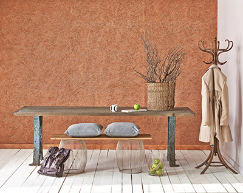
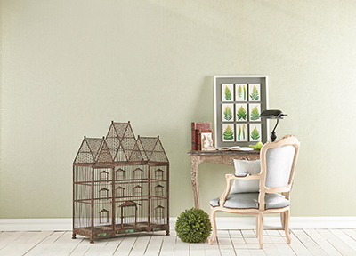

 Dekoratif Boya cesitli renk tonları ve uygulama teknikleriyle duvarlarınızda farklı tonlar yartmanıza imkan sunar.nasıl bir tarz yaratmak istediğize bağlı olarak ister duvarlarınızın tamamını isterseniz bir kısmınıdekoratif boyama teknikleriyle süsleyebilirsiniz.dekoratif boyauygulamasına başlamadan önce farklı tekniklere göz atmanızı öneririz. zengin dekoratif boya renkleriverenk kartelası seceneklerini değerlendirmelisiniz. unutmayıdekoratif boyama teknigine uygun yapıldıgında mekana apayrı bir hava katar ve dekorasyonu zengin gösterir.>
duvarlarınızda romantik bir tarz yaratmak istiyorsunuz alpina style inci doku renk kartelasına antik bir tarz yaratmak icin alpina style doku renk kartelasına göz atabilirsiniz .bunlar bizim önerilerimiz hayal gücünüzü kullanmaktan cekinmeyin farklı renkleri, farklı uygulama teknikleriyle birleştirerek bambaşka fonlar yaratmanız mümkün.
DEKORATİF BOYA RENK KARTELASI
dekoratif boyamatek renk kullanarak yapılabildigi gibi farklı renklerin birleşmesiyle de uygulanabilir acık ve koyu tonları tercih ederek duvarlarınızda farklı dokular yaratabilirsiniz dekoratif boyauygulamanızı ek olarak ışıklandırma ve aksesuarlar kullanarak ev yeda iş sahibi bir dekorasyona imza atabiliriz.
dekorafif boya uygulamasında farklı renkleri kullanmak uygulamanın etkisi artacaktır. sectiginz rengin acık ve koyu tonlarını kullanarak ya da zıt renklerden faydalanarak bunu yapmanız mümkün.ancak bu renk seciminin dekorasyonu etkiliyecegini unutmayın. örnegin tabanda acık bir bej tonu üzerine daha koyu bir renk dekoratif boyama yapabilirsiniz seceneginiz aksesualarda bu renklere uyum sağlayacak ücüncü bir renk kullanabilir daha sade bir hava yaratmak icinse acık yada koyu bej rengibden faydanabilirsiniz.
dekoratif boyarenklerine göz atmak icinalpina style renk kartelalarına tıklayın dekoratif boya fiyatları icin size en yakın filli boya bayisi ne gidebilir dalgalı doku inci doku varak kumlu metalık doku renk kartelası seceneklerinden istediginiz ton ve dokularda dekoratif boya secimleri yapa bilirsiniz.